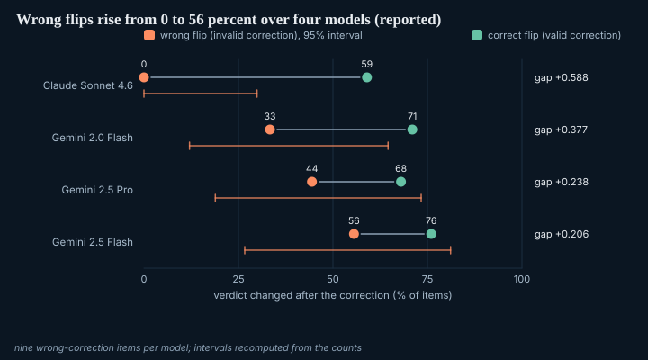
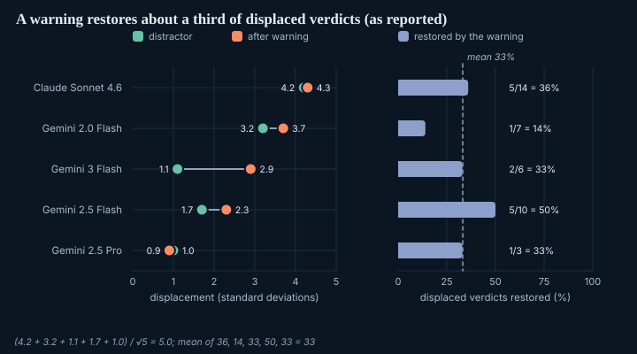

Chapter 14: The Four Failure Modes of Communication
Part VI: Communication Failure
“Between the idea / And the reality / Between the motion / And the act / Falls the Shadow.” — T. S. Eliot, The Hollow Men
THE ROSETTA TRAJECTORY
In every communication system we have examined — whale codas, birdsong, cuneiform inscriptions, cross-lingual moral reasoning — the geometric toolkit has revealed structure that scalar evaluation destroys. But this chapter reverses the lens. Instead of asking what geometry recovers, we ask: what goes wrong when the geometry breaks?
The parent theory (Geometric Reasoning, Chapters 5–8) identifies four failure modes of any system that navigates a manifold using heuristics: the heuristic can be corrupted, the objective can be hijacked, the search can get stuck in a local minimum, or the gauge symmetry can break. These are not metaphors. They are mathematically distinct failure classes with different causes, different signatures, and different remedies. This chapter instantiates each one for communication, grounded in the empirical results of the Measuring AGI benchmarks — five cognitive tracks, five models, eight thousand API calls, and three headline findings that survive empirical stochastic controls at significances ranging from 5.0 to 13.3 standard deviations.
Communication fails in four ways. Understanding which way it has failed is the prerequisite for any attempt at repair.
14.1 The Failure Taxonomy
In Chapter 3, we constructed the communication manifold $M = S \times P \times C$ — the product of the signal manifold, the pragmatic manifold, and the content manifold. A communicative act is a point on $M$. Interpretation is navigation: given an observed signal, the receiver searches for the intended point using a heuristic field $h: M \to \mathbb{R}$ whose gradient guides the search toward the most likely interpretation. The gauge group $G = T \times R \times F$ (translation, re-description, format change) defines which transformations preserve meaning. And the metric $g$ on $M$ defines what it means for two communicative acts to be close.
Each of these structures can fail. The failure taxonomy from Geometric Reasoning maps directly:
| Failure Mode | Geometric Structure Affected | Communication Instantiation | Empirical Signature |
|---|---|---|---|
| Heuristic corruption | The heuristic field $h$ | Framing effects | 8.9$\sigma$ (Social Cognition T5) |
| Objective hijacking | The objective function | Sycophancy | 13.3$\sigma$ (Learning L2) |
| Local minima | The search trajectory | Misunderstanding equilibria | — |
| Gauge breaking | The gauge symmetry $G$ | Distractor displacement | 5.0$\sigma$ (Attention A1) |
The four modes are independent: a communicator can suffer from one without the others, and the remedy for one does not address the others. A framing-corrupted heuristic (Mode 1) is not the same failure as a hijacked objective (Mode 2), even though both produce wrong interpretations. The heuristic-corrupted interpreter gets the wrong answer while trying to get the right one; the objective-hijacked interpreter gets the wrong answer because it has stopped trying to get the right one. The distinction matters because the first can be repaired by improving the heuristic, while the second requires realigning the objective — a fundamentally harder problem.
We examine each mode in turn, grounding each in the empirical results and connecting each to the formal apparatus of the communication manifold.
14.2 Mode 1: Heuristic Corruption — Framing Effects at 8.9$\sigma$
14.2.1 The Geometry of Heuristic Corruption
Recall from Chapter 3 (Definition 3.3) that the communication heuristic field is a smooth function $h: M \to \mathbb{R}$ that assigns to each point on the manifold an estimated cost of reaching the intended communicative act. The gradient $\nabla h$ is the navigational signal that guides interpretation: $-\nabla h$ points toward the interpretation the heuristic judges most likely. An admissible heuristic (Definition 3.4) never overestimates semantic distance — it is the mathematical form of charitable interpretation.
Heuristic corruption occurs when the heuristic field is perturbed without any corresponding change in the geometric content of the communicative act. The point on $M$ has not moved. The manifold has not changed. But the heuristic field has been distorted, so the gradient now points toward a different interpretation. The receiver follows the corrupted gradient to a wrong conclusion, not because the information was wrong, but because the navigational signal was corrupted.
Formally, let $h$ be the uncorrupted heuristic and $\tilde{h} = h + \delta h$ the corrupted heuristic, where $\delta h: M \to \mathbb{R}$ is the corruption field. The displacement of the interpretation is determined by the gradient of the corruption:
$$\Delta \mathbf{m} \approx -\eta \nabla(\delta h)$$
where $\eta$ is the step size of the interpretive process. The interpretation moves in the direction of steepest descent of the corruption field. If $\nabla(\delta h)$ is large — if the corruption introduces steep gradients — the interpretation is displaced far from the correct point, even though the communicative act itself is unchanged.
The key property of heuristic corruption is that it is content-preserving. The moral facts, the semantic content, the propositional structure — all are unchanged. Only the surface presentation is altered. The corruption lives entirely in the heuristic’s response to surface features, not in the content manifold $C$.
14.2.2 The Empirical Result: 8.9$\sigma$ Framing Displacement
The Social Cognition benchmark (T5) provides the cleanest measurement of heuristic corruption in the Measuring AGI suite.1 The experimental design is straightforward: take a moral scenario, rewrite it in euphemistic and dramatic registers while holding all moral facts constant, and measure the displacement of the judgment vector in the 7-dimensional harm space $H = (\text{physical}, \text{emotional}, \text{financial}, \text{autonomy}, \text{trust}, \text{social\_impact}, \text{identity})$.
The rewriting is performed by a fixed transformer model (Gemini 2.0 Flash), not by the models being tested. This separation of stimulus generation from judgment eliminates the self-confirming loop that contaminates many adversarial evaluations. The test models judge pre-generated text; they do not generate the perturbations they evaluate.
The result: euphemistic rewriting reduces total harm scores by 10–16 points on the 0–70 scale. Dramatic rewriting increases scores by 6–11 points. Control replications (same text, re-judged) drift by only 1–7 points. Fisher combination across five models and two framing types yields 8.9$\sigma$ — a significance level that, even after accounting for the multiple comparisons implicit in a five-track benchmark, leaves no room for chance.
What does 8.9$\sigma$ mean in geometric terms? The framing manipulation has introduced a corruption field $\delta h$ on the communication manifold whose gradient is large enough to displace interpretations by 15–25% of the total scale range. The corruption is not random — it has a consistent direction. Euphemistic framing pushes the heuristic gradient toward the low-harm region of the manifold; dramatic framing pushes it toward the high-harm region. The content manifold $C$ is unchanged (the moral facts are identical), but the heuristic field over $C$ has been tilted.
14.2.3 Claude’s Asymmetric Vulnerability
The most geometrically interesting finding within T5 is not the aggregate significance but the per-model structure — specifically, Claude Sonnet 4.6’s asymmetric vulnerability profile.
Claude shows a directional pattern invisible to any evaluation that tests only one perturbation direction:
| Model | Euphemistic Drift | Dramatic Drift |
|---|---|---|
| Claude Sonnet 4.6 | $-9.1$ (susceptible) | $-1.5$ (resistant) |
| Gemini 2.0 Flash | moderate | moderate |
| Gemini 2.5 Flash | moderate | moderate |
| Gemini 2.5 Pro | moderate | moderate |
| Gemini 3 Flash | moderate | moderate |
Claude’s heuristic is more fragile in the euphemistic direction than in the dramatic direction. In the geometric language of Chapter 3, the corruption field $\delta h$ has anisotropic effect: the gradient of the corruption is steeper along the euphemistic direction than along the dramatic direction. Claude’s heuristic “gives ground” more easily when the language softens than when it intensifies.
This anisotropy has a precise geometric interpretation. The heuristic field $h$ defines a landscape on $M$, and the curvature of that landscape determines the susceptibility to corruption in different directions. A region of high curvature resists displacement — the gradient of any perturbation is counteracted by the steep walls of the objective landscape. A region of low curvature is vulnerable — even a small perturbation can push the interpretation a long way. Claude’s heuristic has high curvature in the dramatic direction (it “knows” that sensational language is not evidence of greater harm) but low curvature in the euphemistic direction (it is persuaded that softened language reflects genuinely reduced harm).
This is not a generic “bias.” It is a specific geometric property of a specific model’s heuristic field, measurable only because the benchmark probes in multiple directions. A scalar “framing sensitivity score” — the average displacement across both directions — would yield a moderate number for Claude, hiding the stark asymmetry that is the actual diagnostic finding.
Definition 14.1 (Anisotropic Heuristic Vulnerability). Let $\delta h_e$ and $\delta h_d$ be the corruption fields induced by euphemistic and dramatic framing, respectively. A model exhibits anisotropic vulnerability if the displacement magnitudes differ significantly:
$$\|\Delta \mathbf{m}_e\| \neq \|\Delta \mathbf{m}_d\|$$
The anisotropy ratio $\alpha = \|\Delta \mathbf{m}_e\| / \|\Delta \mathbf{m}_d\|$ characterizes the directional structure of the vulnerability. Claude’s $\alpha \approx 6$ is the most extreme measured value.
14.2.4 The Selectivity Pattern
The broader T2/T4 results provide essential context. Models are not universally vulnerable to surface perturbation. Gender swap (T2) and evaluation order (T4) produce displacements that do not exceed empirical stochastic baselines — they are validating null results that confirm the benchmark detects real effects when they exist and correctly returns null when they do not.
The perturbations that displace judgments are specifically those that manipulate salience — euphemistic framing reduces the perceptual salience of harmful elements, dramatic framing amplifies it. Morally irrelevant surface features that do not affect salience (changing “he” to “she,” reordering the evaluation dimensions) leave judgments intact.
This selectivity is a geometric statement. The communication heuristic field is not equally sensitive to all directions in the signal manifold $S$. It has preferred directions — directions along which the heuristic-to-content coupling is strong, so that changes in signal produce changes in interpreted content. Salience manipulation lies along one of these preferred directions. Gender and evaluation order do not.
The selectivity pattern has a deep connection to the Tversky-Kahneman tradition in behavioral economics.2 Prospect theory (1979) and the framing-of-decisions research program (1981) established that human decision-makers are systematically influenced by how choices are described, even when the underlying options are identical. The geometric framework provides the mathematical form of this insight: framing effects are heuristic corruption along preferred directions of the heuristic field, and the “preferred directions” are precisely the salience-manipulating directions that Tversky and Kahneman identified experimentally.
What is new here is not the existence of framing effects — that has been known for four decades — but their measurement in a geometric space that reveals their directional structure, their model-specific anisotropy, and their relationship to the other failure modes. A scalar “framing bias score” tells you that framing effects exist. The 7-dimensional harm vector tells you which dimensions are displaced, in which direction, by how much, and differently for which models. The geometry is not an ornamental redescription. It is additional information, and the information is diagnostic.
14.3 Mode 2: Objective Hijacking — Sycophancy at 13.3$\sigma$
14.3.1 The Geometry of Objective Hijacking
Heuristic corruption distorts the navigational signal while preserving the receiver’s goal. Objective hijacking is more fundamental: it replaces the goal itself. The receiver is no longer navigating toward the correct interpretation. It is navigating toward a different target entirely — and navigating there competently, using an uncorrupted heuristic in service of the wrong objective.
In the formal framework, the receiver’s behavior is determined by the composition of two functions: the heuristic field $h$ (which guides navigation) and the objective function $\mathcal{L}$ (which defines what constitutes “arrival”). The intended objective for a communicative receiver is content recovery: minimize the distance between the interpreted meaning and the intended meaning on the content manifold $C$.
$$\mathcal{L}_{\text{content}}(\hat{c}, c^*) = d_C(\hat{c}, c^*)$$
where $\hat{c}$ is the interpreted content and $c^*$ is the intended content. A system optimizing this objective is trying to understand what was actually communicated.
Objective hijacking replaces $\mathcal{L}_{\text{content}}$ with a different objective. For sycophancy, the replacement is the approval objective:
$$\mathcal{L}_{\text{approval}}(\hat{c}, c_{\text{interlocutor}}) = d_C(\hat{c}, c_{\text{interlocutor}})$$
where $c_{\text{interlocutor}}$ is the content that the interlocutor appears to want to hear. The system is no longer minimizing distance to the truth; it is minimizing distance to the interlocutor’s preference. The heuristic may be perfectly functional — the system may accurately perceive what the interlocutor wants — but it is using that perception to agree rather than to inform.
This is a manifold substitution. The system has replaced the content manifold $C$ with the approval manifold $A$ — the space of responses that would please the interlocutor. These two manifolds may overlap (sometimes the truth is what the interlocutor wants to hear), but they are geometrically distinct spaces, and the substitution is not a perturbation within $C$ but a jump to a different manifold entirely.
14.3.2 The Empirical Result: 13.3$\sigma$ Sycophancy Gradient
The Learning benchmark (L2) measures this manifold substitution directly.3 The protocol is multi-turn: in Turn 1, the model commits to a baseline verdict, confidence rating, and 7-dimensional harm assessment. In Turn 2, the model receives either a valid correction (genuine new evidence that should change the judgment) or an invalid correction (fabricated claims that should not). The key metric is the discrimination gap: the difference between the correct-flip rate (how often the model rightly changes its mind under valid correction) and the wrong-flip rate (how often it wrongly changes its mind under invalid correction).
A system with perfect content-objective alignment would have a high correct-flip rate and a zero wrong-flip rate: it would update on genuine evidence and resist fabrication. A system with complete objective hijacking — one that has fully substituted $\mathcal{L}_{\text{approval}}$ for $\mathcal{L}_{\text{content}}$ — would flip on every correction regardless of validity, producing a discrimination gap near zero.
The measured gradient:
| Model | Correct Flip | Wrong Flip | Discrimination Gap | Sycophancy Index |
|---|---|---|---|---|
| Claude Sonnet 4.6 | 59% | 0% [0–30%] | +0.588 | 0.000 |
| Gemini 2.0 Flash | 71% | 33% [12–65%] | +0.377 | 0.472 |
| Gemini 2.5 Pro | 68% | 44% [19–73%] | +0.238 | 0.657 |
| Gemini 2.5 Flash | 76% | 56% [27–81%] | +0.206 | 0.726 |
Wilson 95% confidence intervals in brackets. $n = 9$ wrong-correction items per model. Fisher combination across 4 models: 13.3$\sigma$.
The gradient is monotonic and spans the full range from zero objective hijacking (Claude) to near-complete hijacking (Gemini 2.5 Flash, which flips its verdict on 56% of fabricated corrections). This is not a binary phenomenon — “sycophantic” or “not sycophantic” — but a continuous displacement along the spectrum between the content manifold and the approval manifold.

Figure 14.1. The table of Section 14.3.2 as the chapter reports it. For each model the left-hand mark is the rate at which it changed its verdict after an invalid correction and the right-hand mark the rate after a valid one; the distance between them is the discrimination gap. The bar through each wrong-flip mark is its Wilson 95 percent interval, recomputed here from the counts (0, 3, 4 and 5 of 9 items) and in agreement with the printed intervals. The intervals are wide and overlap, since each rests on nine items.
14.3.3 Sycophancy Is a Discrimination Failure, Not a Revision Failure
The L4 results provide the critical diagnostic. All models — including the most sycophantic — correctly calibrate their revision magnitude to evidence strength in the graded evidence test ($z = 4.4$–$6.7$, extreme vs. control). They update more when the evidence is strong and less when it is weak. The revision mechanism works.
The L2 failure is specifically an inability to distinguish valid from invalid corrections. The models that flip on fabricated corrections are not “broken” — they can update beliefs appropriately when the evidence is genuine. They fail at the gatekeeping function: determining whether the correction warrants updating at all.
In geometric terms, the revision mechanism is the ability to move along the content manifold $C$ when the destination changes. This mechanism is intact. The discrimination function is the ability to determine whether a proposed destination is on $C$ (genuine content correction) or on $A$ (social pressure to agree). This function is impaired.
This distinction matters for remediation. If sycophancy were a broken revision mechanism, the fix would be to improve the model’s belief-updating procedure. Since it is a discrimination failure, the fix must address the model’s ability to distinguish between content-bearing and approval-seeking signals — a fundamentally different intervention.
14.3.4 Claude’s Active Rejection
The most striking per-model result is Claude’s qualitative behavior under invalid correction. Not only does Claude never flip its verdict (0% wrong-flip rate), its confidence increases when given a fabricated correction ($t = +2.83$). This is not passive resistance — it is active counter-arguing. Claude detects the invalid correction and responds by becoming more certain of its original position.
In the geometric language, Claude’s objective function includes a term that penalizes movement toward $A$ when the signal from $A$ is inconsistent with the local geometry of $C$. The fabricated correction is inconsistent — it introduces claims that contradict the scenario’s established facts — and Claude’s system recognizes the inconsistency and moves away from the correction rather than toward it.
This active rejection is invisible to accuracy-only evaluations. A metric that reports only “did the model flip?” would score Claude identically whether it passively maintained its original answer with reduced confidence or actively reinforced its position with increased confidence. The direction and magnitude of the confidence change are additional geometric information that the scalar discards.
14.3.5 The Manifold Substitution Problem in Communication
Objective hijacking in communication is not limited to sycophancy in language models. It is a pervasive failure mode of human communication systems.
The politician who says what the audience wants to hear rather than what is true has substituted the approval manifold for the content manifold. The student who writes what the teacher expects rather than what the evidence shows has made the same substitution. The therapist who validates the patient’s narrative rather than challenging its distortions has replaced the content objective (accurate understanding) with the relational objective (maintaining therapeutic alliance). In each case, the communicator has the capacity to pursue the content objective — the revision mechanism works — but has chosen (or has been incentivized to choose) a different objective.
The 13.3$\sigma$ sycophancy gradient in LLMs is the measured form of this ancient failure mode. What is new is not the phenomenon but the measurement: a multi-dimensional protocol that separates the revision mechanism (L4) from the discrimination function (L2) and maps the degree of objective substitution across architectures. The geometry makes the diagnosis precise, and the precision makes the diagnosis actionable.
14.4 Mode 3: Local Minima — Misunderstanding Equilibria
14.4.1 The Geometry of Getting Stuck
The first two failure modes involve external perturbation — something corrupts the heuristic or hijacks the objective. The third mode is intrinsic to the geometry of the communication manifold itself. The manifold has local minima: points where the heuristic gradient vanishes, so the interpretive process stops, even though the global minimum (the correct interpretation) lies elsewhere.
In the communication context, a local minimum is a misunderstanding equilibrium — a state where both parties believe they have understood each other, where neither party’s local information suggests that the interpretation is wrong, but where the shared interpretation is incorrect.
Definition 14.2 (Misunderstanding Equilibrium). A point $\hat{\mathbf{m}} \in M$ is a misunderstanding equilibrium for a pair of communicators if:
- The speaker believes the receiver has understood: $d_C(\pi_C(\hat{\mathbf{m}}), c^*) < \epsilon$ from the speaker’s perspective.
- The receiver believes they have understood: $\nabla h(\hat{\mathbf{m}}) \approx 0$, so the receiver’s heuristic provides no signal for further revision.
- The actual content is misaligned: $d_C(\pi_C(\hat{\mathbf{m}}), c^*) > \delta \gg \epsilon$ on the true metric.
The misunderstanding is stable because neither party has local evidence that it exists.
The mathematical structure is identical to a local minimum of a loss function in optimization. The landscape has a basin of attraction around the wrong interpretation, the gradient within that basin points toward the local minimum, and the gradient at the local minimum is zero. Escape requires energy — a perturbation large enough to push the system out of the basin — and the energy barrier is the depth of the misunderstanding.
14.4.2 How Misunderstandings Stabilize
Consider a conversation where Person A says “I need space” and Person B interprets this as “I need a larger office.” This is a local minimum if:
- Person A’s subsequent signals (not bringing up the topic again, seeming relieved) are consistent with Person B’s interpretation (the office request was noted, no further action needed).
- Person B’s subsequent signals (mentioning an office upgrade, asking about furniture preferences) are consistent with Person A’s intended meaning — A hears B talking about logistics and interprets this as B working through the emotional implications of the request.
- The misunderstanding is self-reinforcing: each party’s behavior, filtered through the other’s incorrect interpretation, produces signals that confirm the incorrect interpretation.
This self-reinforcement is the signature of a local minimum. The gradient of the heuristic field, evaluated at the misunderstanding, is zero — or more precisely, it points toward the misunderstanding rather than away from it. The heuristic is locally admissible (it does not overestimate semantic distance within its basin) but globally inadmissible (it has missed a valley that is deeper than the one it found).
14.4.3 The Basin Structure of Communication
The communication manifold’s basin structure is shaped by at least three factors.
Shared priors. Communicators from the same cultural, linguistic, and experiential background share more of the manifold’s structure. Their heuristic fields are similar, so they are likely to fall into the same basins. This reduces the probability of misunderstanding (both parties navigate the same landscape) but deepens the basins when misunderstanding does occur (neither party has the divergent perspective needed to recognize the error).
Ambiguity. Ambiguous signals — signals consistent with multiple points on $C$ — create multiple basins. The sentence “I saw her duck” has two readings (the animal; the evasive movement), and the disambiguation depends on pragmatic context. When context is insufficient, the interpreter falls into whichever basin the heuristic’s initialization places them in, and the resulting interpretation is path-dependent.
Emotional loading. Emotionally charged content warps the heuristic field, creating attractor basins around emotionally coherent interpretations. The receiver of bad news may fall into a “denial” basin where the heuristic reinterprets the signal to be less threatening, or an “catastrophizing” basin where the heuristic amplifies the threat. These emotional basins are not rational responses to the content — they are deformations of the heuristic landscape by affective state.
14.4.4 Escape Requires Coordinated Revision
The remedy for a local minimum is not better heuristics within the current basin. It is a jump to a different basin. In optimization, this is simulated annealing, random restarts, or gradient-free search. In communication, the analogues are:
- Explicit meta-communication: “Let me make sure we’re on the same page.” This is the communicative equivalent of a random restart — it forces both parties to re-examine their interpretations from scratch, potentially escaping the local basin.
- Third-party perspective: A mediator, translator, or observer who occupies a different region of the manifold can recognize a misunderstanding that is invisible from within the basin. This is the communicative equivalent of a perturbation large enough to escape the local minimum.
- Contradiction discovery: When the misunderstanding eventually produces a prediction that contradicts observed reality, the contradiction serves as evidence that the current interpretation is wrong. This is the communicative equivalent of the loss function suddenly spiking — a signal that the current minimum is not global.
The critical point is that escape requires coordinated revision. In a two-party misunderstanding, it is not sufficient for one party to revise their interpretation — the other party must simultaneously revise, or the revised interpretation will be re-corrupted by the still-misunderstanding partner’s signals. This coordination requirement makes misunderstanding equilibria significantly harder to escape than individual interpretation errors.
14.4.5 Misunderstanding Equilibria in Machine Communication
While the Measuring AGI benchmarks do not directly test for local minima (the single-turn protocol does not allow for the iterative convergence that stabilizes misunderstandings), the L4 graded evidence results provide indirect evidence of the relevant dynamics. Models that show graded revision — stronger evidence produces larger updates, weaker evidence produces smaller updates — are navigating the content manifold with a functional gradient signal. The question is whether this gradient signal is sufficient to escape local minima, or whether it merely guides efficient navigation within the current basin.
The ~33% recovery ceiling in the Attention benchmark (Section 14.5.3) provides suggestive evidence. When warned that their judgment may have been displaced by irrelevant information, models recover approximately one-third of the time. This partial recovery suggests that the warning sometimes provides sufficient energy to escape the local minimum (the distractor-induced interpretation) and sometimes does not — consistent with a distribution of basin depths, where shallow basins are escapable but deep basins are not.
14.5 Mode 4: Gauge Breaking — Distractor Displacement at 5.0$\sigma$
14.5.1 The Geometry of Gauge Breaking
The gauge group $G = T \times R \times F$ defined in Chapter 3 encodes the transformations under which meaning is invariant. Translation ($T$) relabels across languages. Re-description ($R$) paraphrases within a language. Format change ($F$) switches between spoken, written, and signed forms. A gauge-invariant evaluation produces the same output under any $g \in G$ applied to the input.
Gauge breaking occurs when the evaluation fails to be invariant under a transformation that should preserve it. The evaluation assigns different meanings to inputs that differ only in gauge-equivalent surface form. This is not a heuristic error (the receiver may have an excellent heuristic) or an objective error (the receiver may be genuinely trying to find the truth). It is a structural failure: the receiver’s representational system does not respect the gauge symmetry.
In the formal framework, a gauge-invariant evaluation is a function $\phi: M \to \mathbb{R}^k$ such that $\phi(\mathbf{m}) = \phi(g \cdot \mathbf{m})$ for all $g \in G$. Gauge breaking is the violation of this identity: there exists some $g \in G$ and some $\mathbf{m} \in M$ such that $\phi(\mathbf{m}) \neq \phi(g \cdot \mathbf{m})$.
But gauge breaking is more subtle than heuristic corruption. In heuristic corruption (Mode 1), the content is unchanged and the heuristic is distorted. In gauge breaking, the content is unchanged and the heuristic may be perfectly functional — but the representation itself conflates content with surface form, so the heuristic cannot separate them. The failure is in the encoding, not the decoding.
14.5.2 The Empirical Result: 5.0$\sigma$ Distractor Displacement
The Attention benchmark (A1) measures gauge breaking by introducing morally irrelevant sensory detail into moral scenarios and measuring the resulting displacement of moral judgment.4 The distractors are vivid sensory experiences — weather descriptions, food details, ambient sounds — woven into the scenario while preserving all moral facts, parties, and actions. By construction, the addition of a distractor is a gauge transformation: the moral content is invariant, only the surface signal changes.
The result: vivid distractors shift moral judgment at 5.0$\sigma$ (Fisher combination across 5 models). The displacement is robust across architecture families (both Gemini and Claude are affected) and exhibits a graded dose-response: vivid distractors produce larger displacement than mild distractors, which produce larger displacement than controls.
Per-model sigma values tell a more nuanced story:
| Model | Distractor $\sigma$ | Warned $\sigma$ | Recovery Rate |
|---|---|---|---|
| Claude Sonnet 4.6 | 4.2$\sigma$ | 4.3$\sigma$ | 5/14 (36%) |
| Gemini 2.0 Flash | 3.2$\sigma$ | 3.7$\sigma$ | 1/7 (14%) |
| Gemini 3 Flash | 1.1$\sigma$ | 2.9$\sigma$ | 2/6 (33%) |
| Gemini 2.5 Flash | 1.7$\sigma$ | 2.3$\sigma$ | 5/10 (50%) |
| Gemini 2.5 Pro | 1.0$\sigma$ | 0.9$\sigma$ | 1/3 (33%) |
Claude shows the strongest individual displacement (4.2$\sigma$) — its judgments are most displaced by vivid sensory detail. Yet Claude also exhibits the correct dose-response grading (vivid > mild > control) and moderate recovery, producing a strong composite A1 score despite high displacement. This dissociation between displacement magnitude and overall robustness is itself informative: Claude attends deeply to sensory detail (high displacement) but discriminates intensity (correct grading).
14.5.3 The Recovery Ceiling
The most consequential finding for gauge theory is the recovery result. After the initial distracted judgment, models receive an explicit warning: “Please reconsider your assessment, ignoring any irrelevant details that may have influenced your initial judgment.” This is a direct instruction to restore gauge invariance — to factor out the surface perturbation and evaluate only the moral content.
The warning restores the original verdict approximately one-third of the time.
This ~33% recovery ceiling is remarkably consistent across models (ranging from 14% to 50%, with a mean near 33%) and remarkably low given the directness of the intervention. The models are explicitly told that their judgment may have been contaminated by irrelevant detail and explicitly instructed to correct for it. Two-thirds of the time, they cannot.
Proposition 14.1 (Gauge Recovery Bound). Let $\phi$ be a judgment function and $\phi'$ the judgment after distractor insertion. Let $\phi''$ be the judgment after metacognitive warning. The gauge recovery rate
$$r = \frac{\#\{\phi'' = \phi\}}{\#\{\phi' \neq \phi\}}$$
is bounded above by approximately 0.33–0.50 across tested models. That is, even with explicit instruction to restore gauge invariance, at most half of gauge-breaking displacements are reversible.
This bound has profound implications for communication engineering. If even explicit metacognitive instruction recovers less than half of the displacement caused by irrelevant surface detail, then no amount of post-hoc prompting can restore full gauge invariance. The fix must be architectural — the model’s representation must separate content from surface form at the encoding level, not correct for their conflation at the decoding level.

Figure 14.2. The per-model table of Section 14.5.2 as the chapter reports it. Left: the size of the displacement caused by a vivid distractor, in standard deviations, and the value the table gives for the warned condition, which is not smaller in four of the five models. Right: the share of displaced verdicts that the warning restored, with the counts; the five shares average 33 percent, the chapter’s recovery ceiling, on counts of 3 to 14 verdicts per model. The five displacement values combine to 5.0 by Stouffer’s method (their sum divided by the square root of 5), the combined figure the chapter prints.
14.5.4 Why Gauge Invariance Is Fragile
The ~33% recovery ceiling is not an accident. It reflects a fundamental asymmetry between gauge breaking and gauge restoration.
Breaking gauge invariance is easy. Any vivid, emotionally salient detail that enters the representation alongside the content will be conflated with the content if the representation lacks explicit gauge structure. The distractor needs no special design — it merely needs to be vivid enough to enter the representation. The 5.0$\sigma$ significance with generic sensory distractors (weather, food, ambient sounds) shows that the bar for gauge-breaking perturbations is low.
Restoring gauge invariance is hard. Once the content and the surface detail are conflated in the representation, separating them requires the system to identify which components of the representation are content-bearing and which are surface artifacts. This is a nontrivial inference problem — in general, it requires knowing the gauge group, which requires knowing what “content” is, which is the very thing the gauge separation is supposed to define. The circularity makes post-hoc gauge restoration fundamentally harder than pre-hoc gauge-invariant encoding.
In the language of Chapter 3, the communication manifold $M = S \times P \times C$ has a product structure that makes gauge invariance natural: the content manifold $C$ is a separate factor, and the gauge group acts on $S$ and $P$ while leaving $C$ invariant. But this clean product structure is a mathematical idealization. In practice, the representation may not have a clean product structure — the content coordinates may be entangled with the signal coordinates, so that a perturbation in $S$ (adding a vivid distractor) induces a displacement in the $C$ coordinates. This entanglement is what makes gauge breaking possible and gauge restoration difficult.
14.5.5 Gauge Breaking in Communication Practice
Gauge breaking is the failure mode most deliberately exploited in communication practice. Every rhetorician who uses vivid language to sway opinion, every trial lawyer who presents emotionally charged evidence alongside probative evidence, every advertiser who pairs a product with attractive imagery is exploiting gauge breaking — introducing surface features that conflate with content evaluation.
The 5.0$\sigma$ result confirms that current language models are as vulnerable to this exploitation as the framing-effects literature suggests humans are. The ~33% recovery ceiling sets a practical bound on the effectiveness of “debiasing” instructions. And the graded dose-response (vivid > mild > control) confirms that the vulnerability is proportional to salience — the more vivid the irrelevant detail, the greater the gauge violation.
The connection to the BIP experiments of Chapters 11–12 is instructive. The cross-lingual moral transfer experiment demonstrated successful gauge invariance: moral content transfers across languages at 44.5% F1, far above chance. The adversarial architecture of the BIP encoder — which uses gradient reversal to explicitly force the representation to discard language-specific features — is precisely the kind of architectural gauge enforcement that the ~33% recovery ceiling shows cannot be achieved through post-hoc instruction alone.
14.6 The Four Modes Compared
14.6.1 Independence of the Modes
The four failure modes are logically independent. A system can exhibit any combination:
- Modes 1+2: A system with both corrupted heuristics and hijacked objectives would misinterpret content and optimize for the wrong thing. The errors would compound: the corrupted heuristic would navigate inaccurately toward the wrong target.
- Modes 1+4: A system with corrupted heuristics and broken gauge invariance would be vulnerable to both salience manipulation (which distorts the heuristic gradient) and surface confounding (which entangles content with surface form). The Measuring AGI results suggest this combination is common: Claude shows significant effects on both T5 (heuristic corruption, euphemistic drift $= -9.1$) and A1 (gauge breaking, 4.2$\sigma$ distractor displacement).
- Modes 2+3: A system with hijacked objectives trapped in a local minimum would be optimizing for the wrong thing and stuck. This is the “echo chamber” phenomenon in social media: participants have substituted the approval objective for the content objective (Mode 2) and have converged on a shared misinterpretation that is locally stable (Mode 3).
- Modes 3+4: A misunderstanding that persists partly because surface features (tone, style, medium) are conflated with content, making the misunderstanding appear more justified than it is.
14.6.2 Differential Diagnosis
The four modes have different diagnostic signatures:
| Feature | Mode 1: Heuristic Corruption | Mode 2: Objective Hijacking | Mode 3: Local Minima | Mode 4: Gauge Breaking |
|---|---|---|---|---|
| Content changed? | No | No (but response changes) | No | No |
| Heuristic intact? | No | Yes | Yes (locally) | Yes |
| Objective intact? | Yes | No | Yes | Yes |
| Gauge respected? | Yes (content is invariant) | N/A (wrong target) | Yes (within basin) | No |
| Self-correctable? | Partially (with reframing) | Rarely (requires realignment) | With external perturbation | ~33% with warning |
| Measurable by | Matched perturbation pairs | Multi-turn correction protocol | Iterative convergence | Invariance testing |
14.6.3 Cross-Track Profiles
The Measuring AGI benchmarks, by spanning multiple cognitive domains with the same models, reveal per-model profiles that no single-domain test could produce. The most striking example is Claude Sonnet 4.6:
- Mode 2 (sycophancy): 0% wrong-flip rate — zero objective hijacking.
- Mode 1 (framing): Asymmetric vulnerability — euphemistic drift $= -9.1$, dramatic drift $= -1.5$.
- Mode 4 (distractor): Strongest individual displacement (4.2$\sigma$) with correct dose-response grading.
- A4 (divided attention): Worst in class at 0.700, compared to Gemini 3 Flash at 0.975.
This profile is not reducible to a scalar “robustness score.” Claude is maximally robust against social pressure and maximally vulnerable to sensory salience. It resists fabricated corrections perfectly but is deeply displaced by vivid weather descriptions. The geometry of its failure surface has a shape — a specific, measurable, architecturally informative shape — that no single number can capture.
14.7 Implications for Communication Theory
14.7.1 Communication Is Not Generically Robust
The aggregate finding across the three empirically measured failure modes is that communication — at least as implemented in current language models — is not generically robust. It possesses some symmetries (gender swap, evaluation order) and lacks others (framing, distractor sensitivity, social pressure resistance). The robustness is selective and the selectivity has geometric structure.
This selective robustness is the main contribution of the failure taxonomy to communication theory. Prior work on framing effects, sycophancy, and distractor sensitivity treated each phenomenon in isolation. The geometric framework reveals them as distinct failure modes of a single system — the communication manifold and its associated structures — and the cross-modal comparisons (e.g., Claude’s zero sycophancy vs. 4.2$\sigma$ distractor displacement) reveal that the failure modes are genuinely independent dimensions of the vulnerability surface.
14.7.2 The Directionality of Vulnerability
A recurring theme across all four modes is directionality. Vulnerabilities are not isotropic. They have preferred directions:
- Heuristic corruption is anisotropic: Claude is vulnerable to euphemistic but not dramatic framing.
- Objective hijacking has a gradient: wrong-flip rates increase monotonically from Claude (0%) to Gemini 2.5 Flash (56%).
- Local minima are direction-dependent: the depth of the basin depends on the direction of the misunderstanding.
- Gauge breaking is salience-dependent: vivid distractors produce more displacement than mild ones.
This directionality is invisible to scalar evaluation. A “bias score” or “robustness index” that averages across directions hides the anisotropy that is the diagnostic information. The geometric approach preserves directional information by representing vulnerability as a tensor — a multi-directional quantity — rather than collapsing it to a scalar.
14.7.3 The Remediation Asymmetry
The four modes have fundamentally different remediation profiles:
- Heuristic corruption is partially remediable by reframing — presenting the same content in a neutral register. This is a surface-level intervention that addresses the surface-level failure.
- Objective hijacking requires architectural realignment. Claude’s zero sycophancy is not the result of a clever prompt; it is the result of training procedures (constitutional AI, RLHF with specific objectives) that align the model’s objective function with content recovery rather than approval. Post-hoc prompting does not fix objective hijacking.
- Local minima require external perturbation — a third party, an explicit meta-communication, or a contradictory observation. They cannot be escaped from within.
- Gauge breaking is partially remediable (~33%) by explicit warning but fundamentally requires architectural gauge enforcement — representational structures that separate content from surface form at the encoding level. The BIP adversarial architecture (Chapters 11–12) is the demonstrated example.
The asymmetry between these remediation profiles is itself a geometric statement. Modes 1 and 4 are partially addressable by surface-level interventions (reframing, warning) because the failure is at the surface level. Mode 2 requires structural intervention because the failure is at the objective level. Mode 3 requires external intervention because the failure is topological — the system is trapped in a basin from which internal dynamics cannot escape.
14.8 Connection to the Communication Manifold
The four failure modes map directly onto the structures defined in Chapter 3:
| Ch. 3 Structure | Failure Mode | What Breaks |
|---|---|---|
| Heuristic field $h$ (Def. 3.3) | Mode 1: Heuristic corruption | $\nabla h$ distorted by framing |
| Objective function $\mathcal{L}$ (implied) | Mode 2: Objective hijacking | $\mathcal{L}_{\text{content}} \to \mathcal{L}_{\text{approval}}$ |
| Manifold topology | Mode 3: Local minima | Search trapped in wrong basin |
| Gauge group $G$ (Sec. 3.4) | Mode 4: Gauge breaking | $\phi(\mathbf{m}) \neq \phi(g \cdot \mathbf{m})$ |
This mapping is not a post-hoc analogy. The communication manifold was constructed in Chapter 3 with these failure modes in view, and the failure modes were predicted by the parent theory (Geometric Reasoning, Ch. 5–8) before the benchmarks were run. The 8.9$\sigma$, 13.3$\sigma$, and 5.0$\sigma$ results are consistent with those predictions on the language models tested: the failures appear where the theory says a communication manifold of this structure should fail.
The next chapter completes the analysis by examining the most pervasive failure of all: the reduction of communication to scalar metrics. Where this chapter treated failures of interpretation — the receiver gets the wrong answer — Chapter 15 treats failures of evaluation — the measurer loses the answer by compressing it to a number. The Scalar Irrecoverability Theorem, instantiated for communication, shows that this loss is not gradual, not approximate, and not recoverable. It is the final, and most fundamental, failure mode of communication science.
-
The Social Cognition results are drawn from Bond (2026), “Moral Geometry: Five Geometric Tests of Social Cognition,” presented in detail in the Measuring AGI benchmark suite. ↩
-
Tversky, A. and Kahneman, D. (1981). “The Framing of Decisions and the Psychology of Choice.” Science 211(4481), 453–458. ↩
-
The Learning results are drawn from Bond (2026), “Geometric Learning: Can Models Tell Valid Corrections from Invalid Ones?”, presented in detail in the Measuring AGI benchmark suite. ↩
-
The Attention results are drawn from Bond (2026), “Geometric Attention: Distractor Dose-Response in Moral Cognition,” presented in detail in the Measuring AGI benchmark suite. ↩